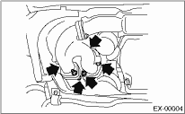
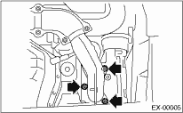
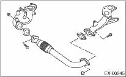

1. Set the vehicle on a lift.
2. Disconnect the ground cable from the battery.

3. Remove the collector cover.
4. Remove the front oxygen (A/F) sensor. 
5. Remove the under cover.
6. Remove the exhaust manifold lower cover (RH) and the exhaust manifold cover (LH).

7. Remove the nuts which hold front exhaust pipe assembly onto turbocharger joint pipe.
8. While holding the front exhaust pipe assembly with one hand, remove the nuts which hold the front exhaust pipe assembly to cylinder head exhaust port.


9. Remove the front exhaust pipe assembly.
10. Remove the covers from exhaust manifold and front exhaust pipe.
11. Separate the front exhaust pipe from exhaust manifolds.
